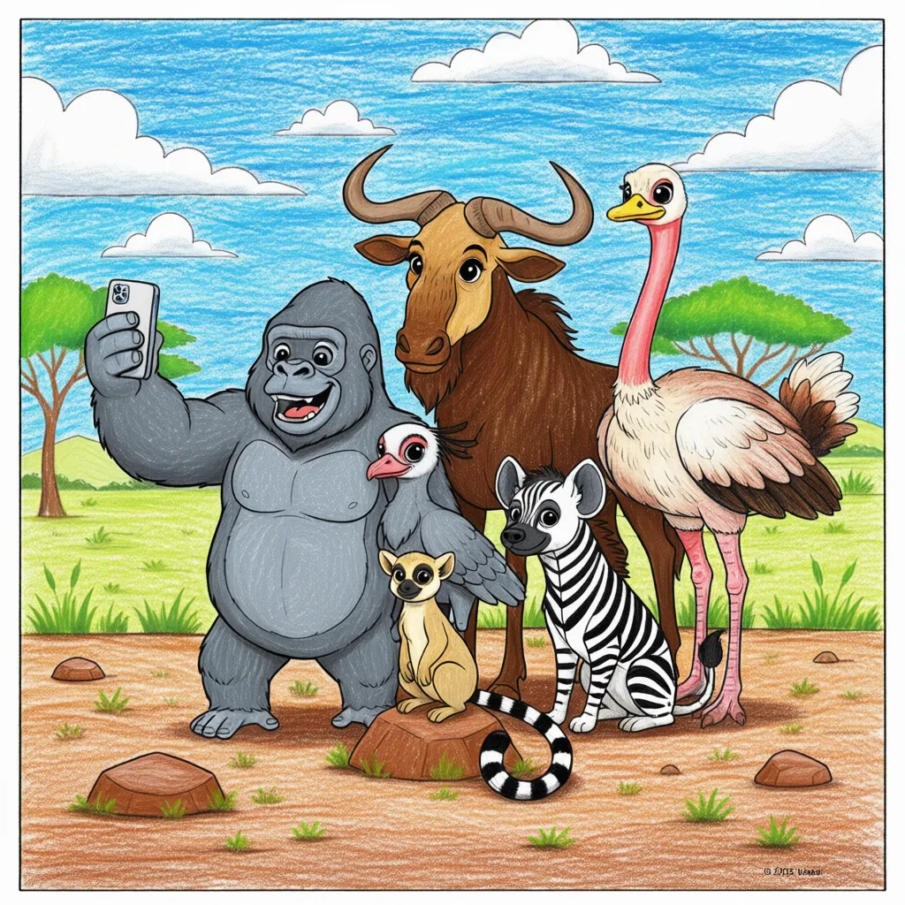

Animal Selfie
Protect our Friends

Conservation Message
- We share this beautiful planet with these amazing animals.
- It is our job to be their protectors and make sure they have a safe home.
- By learning about them, you are already helping to save them!"
- Discuss one thing your family can do today to help wildlife, like recycling or learning about endangered species.
- Every animal you colored is facing challenges like habitat loss. Your voice matters!
- Take a fun 'selfie' with your favorite colored page and share the beauty of the wild!